Yeping Wang 王业平
I am a final-year PhD candidate in Computer Science at the University of Wisconsin-Madison, advised by Michael Gleicher. My work focuses on robot manipulation, specifically learning-based methods and planning algorithms. I am also interested in human-robot interaction and robot visualization. Previously, I obtained my Master's degree in Robotics from Johns Hopkins University.
I have also worked on robot manipulation in industry as a Research Scientist Intern at Meta Reality Labs, an Applied Scientist Intern at Amazon Robotics and a Research Intern at Mitsubishi Electric Research Laboratories (MERL).
yeping@cs.wisc.edu
CV | Google Scholar | LinkedIn | Github
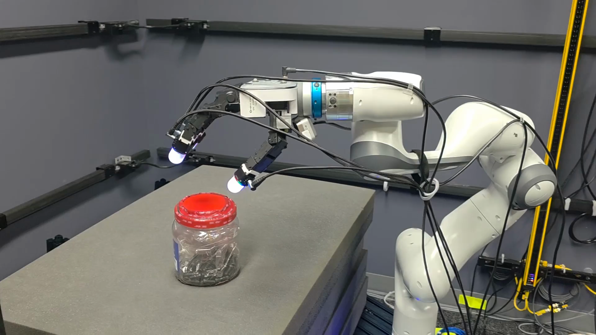
Under Review, 2026 Website • arXiv • Video
A visuotactile policy that empowers robot dexterity via multimodal contact grounding.
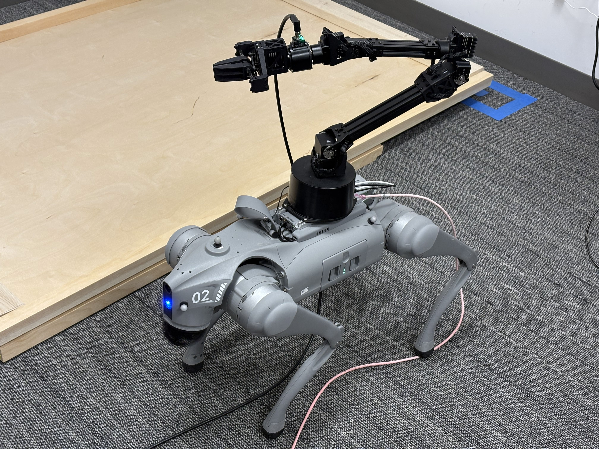
A whole-body controller for a quadruped robot with an arm, combining model-based admittance control for manipulation with reinforcement learning for locomotion to enable compliant and safe human-robot collaboration.
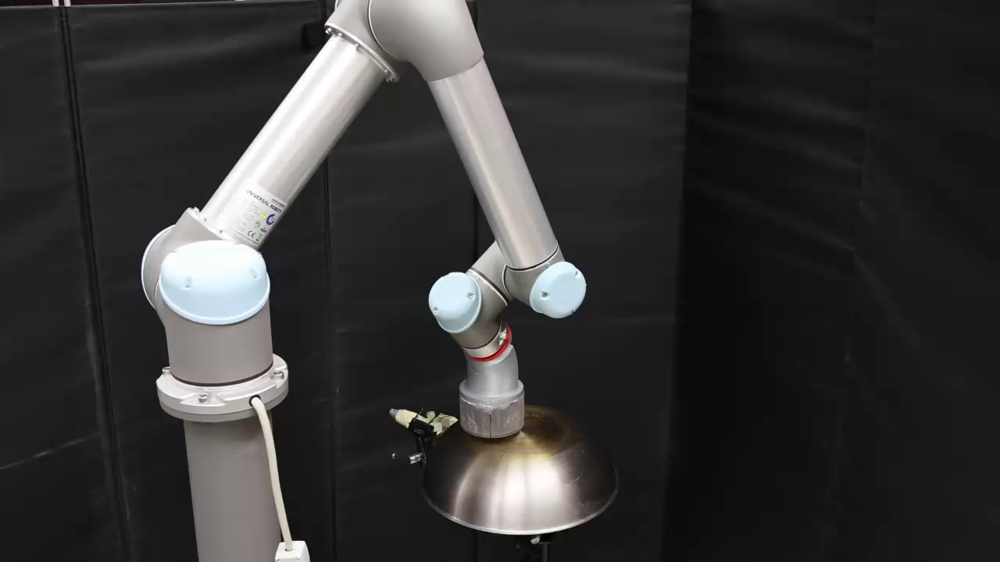
A motion planner that enables a robotic arm to coverage a surface with its end-effector, ideal for applications such as sanding, polishing, and sensor scanning.
RAL, IROS'26 PDF • Poster • Code
A fast motion planner for guiding a robotic arm’s end-effector along a trajectory, particularly useful for applications such as welding and drawing.
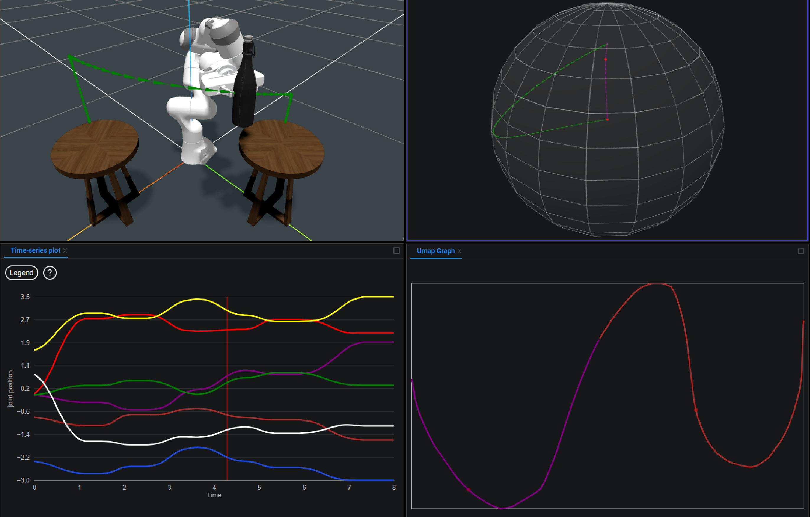
RAL, ICRA'25 PDF • Poster • Code
We design and build a web-based tool for roboticists to understand, compare, and share robot motions.
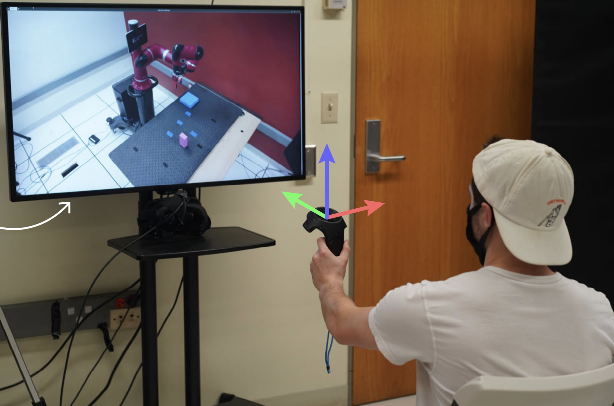
IEEE Access, 2024 PDF
We articulate a design space for control coordinate systems in teleoperation, providing criteria and new designs to map operator commands to robot motions intuitively.
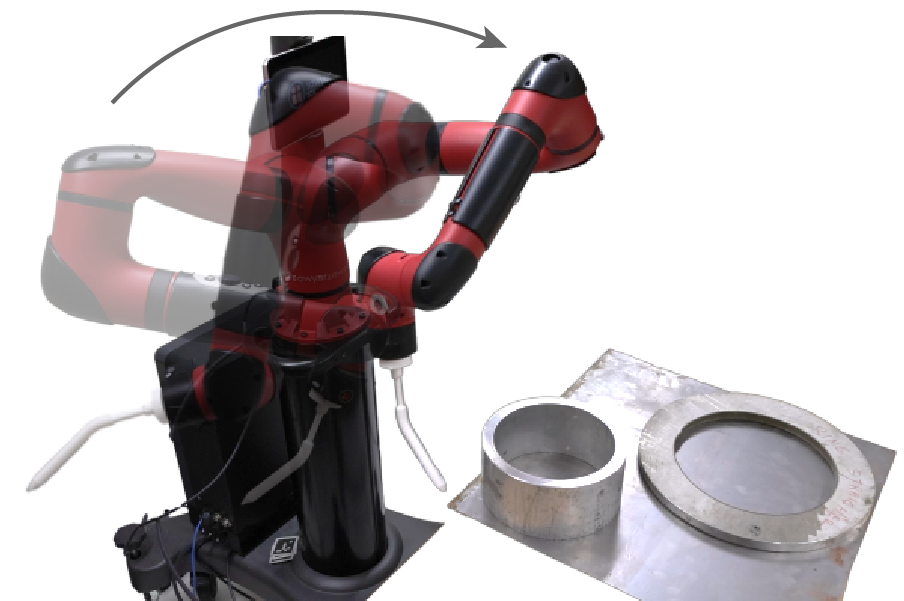
A method for tracking end effector trajectories while taking minimal breaks to reconfigure the arm position.
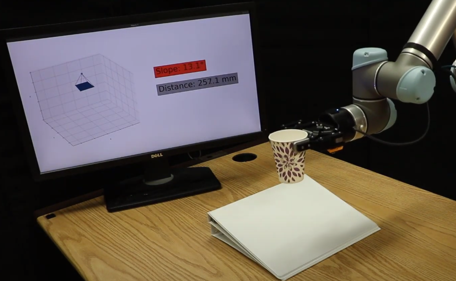
RA-L, ICRA'24 PDF • Project page • Video • Code
We directly utilize low-level information generated by optical time-of-flight sensors to recovery of planar geometry and albedo from a single sensor measurement.
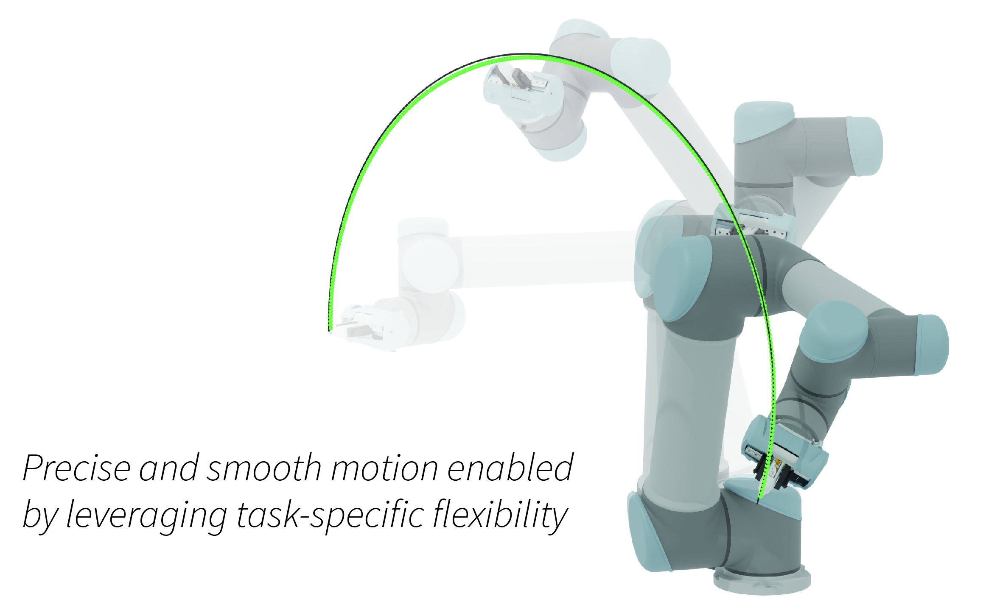
ICRA'23 PDF • Presentation • Poster • Code
A real-time motion generation method that accommodates various types of kinematic requirements within a single, unified framework.
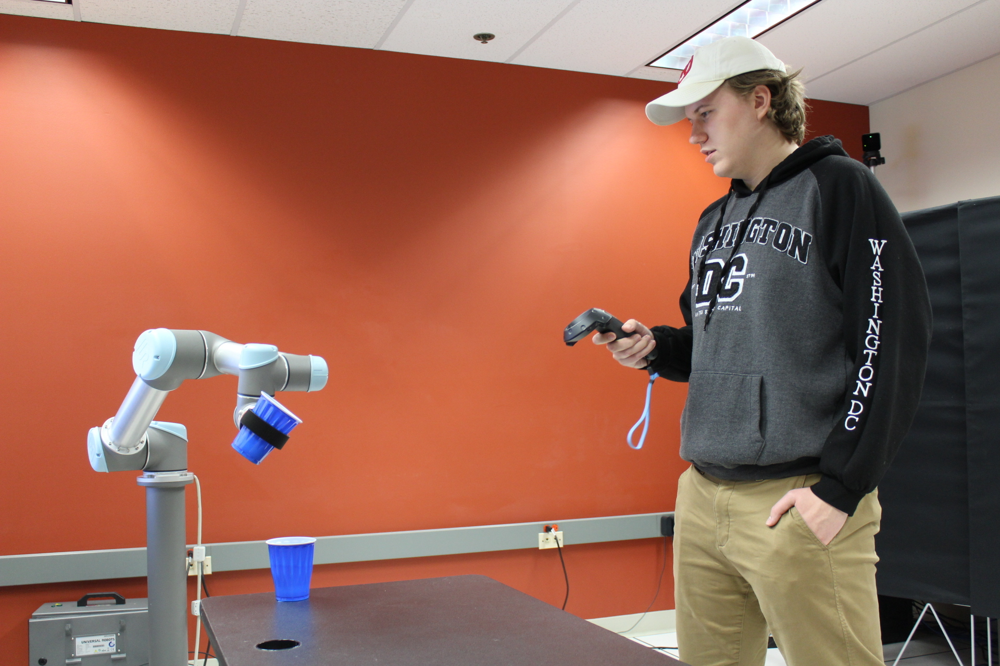
We explore task tolerances, i.e., allowable position or rotation inaccuracy, as an important resource to facilitate smooth and effective telemanipulation.
CSCW'23 PDF • Project page
We design, build, and evaluate Periscope, a robotic camera system that allows two people to collaborate remotely on physical tasks.
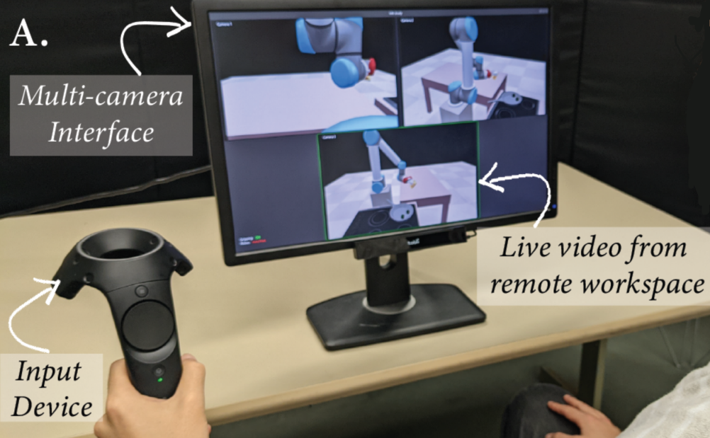
HRI'22 PDF • Presentation
We investigate the effects of using multiple view-specific control frames in a multi-camera interface on task performance and user experience during robot telemanipulation.
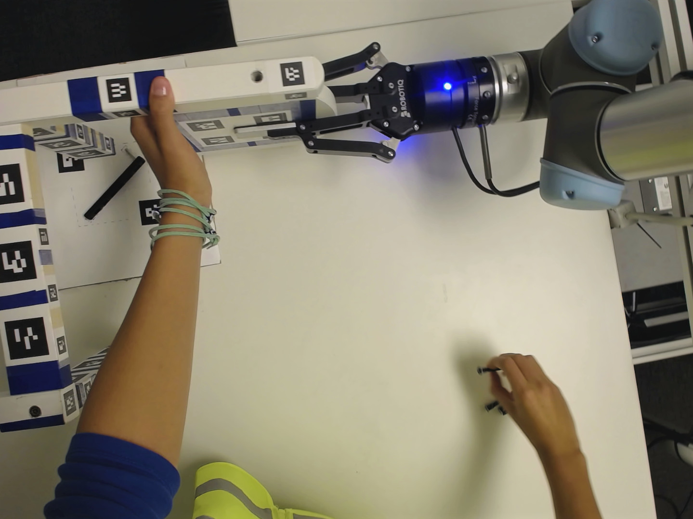
HRI'20 PDF • Presentation
We explore how first-person demonstrations can be utilized to enable user-centric robotic assistance in human-robot collaborative assembly tasks.